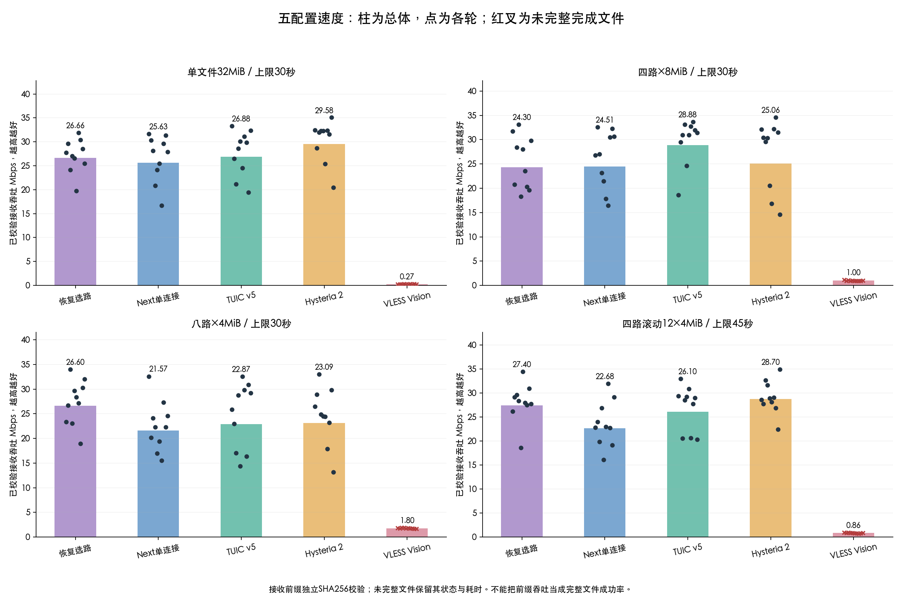

2026-11-23 · HONOR TFY-AN00 / Android12 · 同一Wi-Fi原生核心
| 配置 | 实际组合 | 服务端/补充参数 |
|---|---|---|
| 恢复选路 | Next双QUIC通道＋TLS、自适应RecoveryAware | 冻结Next原型，BBR；预算/副本/合并关闭 |
| Next单连接 | Next单QUIC通道＋TLS | 同Next服务器，BBR |
| TUIC v5 | QUIC＋TLS | CatNode V2Core/Mihomo；BBR，0RTT/FastOpen关闭 |
| Hysteria 2 | QUIC＋TLS | CatNode V2Core/Mihomo；未填Brutal速率，默认BBR路径，无obfs |
| VLESS Vision | TCP＋TLS＋XTLS Vision，VLESS无额外加密 | CatNode V2Core/Mihomo；系统TCP拥塞控制见环境记录；不是REALITY |
每组新客户端并重启对应测试服务，冷却5秒；只有当前测试入口启动。证书校验开启，临时根证书仅用于测试程序，不装到系统。固定目标为同VPS上的HTTPS服务，相同证书及域名；临时hosts映射保证CatNode目标嗅探后可解析。两台服务器分别用于速度/延迟，不跨服务器合成总分。端口和顺序平衡仍不能消除全部源端口、路径和时段影响；服务器原有业务未停用，公网和CPU不是完全隔离的实验室环境。
Next原型与CatNode完整核心的调度/dispatcher/limiter开销不同；QUIC的BBR也不是同一实现与窗口。VLESS基于TCP，无法据本结果分离传输、拥塞算法与实现效果。串行场景恢复配置未必建立第二通道，差异不能全部归因恢复选路。恢复只为新流避让本端发包判丢/RTT恶化的入口，既有业务不迁移/重放，没有新增服务器下行恢复反馈。
测试不调参，不采逐包或选路日志，不删除或替换慢轮。仅测量工具增加收到前缀的SHA256校验及严格带载等待上限15秒，协议核心未改；竞态和静态检查已通过。相同测量工具覆盖全部五组。

| 任务 | 配置 | 轮数 | 校验接收Mbps | 完整文件成果Mbps | 完整文件/计划 | 逐轮中位 | 最慢轮 | 最快轮 | 前缀校验失败 |
|---|---|---|---|---|---|---|---|---|---|
| 单文件32MiB / 上限30秒 | 恢复选路 | 10 | 26.66 | 26.66 | 10/10 | 27.40 | 19.73 | 31.86 | 0 |
| 单文件32MiB / 上限30秒 | Next单连接 | 10 | 25.63 | 25.63 | 10/10 | 28.04 | 16.67 | 31.66 | 0 |
| 单文件32MiB / 上限30秒 | TUIC v5 | 10 | 26.88 | 26.88 | 10/10 | 29.22 | 19.47 | 33.30 | 0 |
| 单文件32MiB / 上限30秒 | Hysteria 2 | 10 | 29.58 | 29.58 | 10/10 | 32.15 | 20.49 | 35.08 | 0 |
| 单文件32MiB / 上限30秒 | VLESS Vision | 10 | 0.27 | 0.00 | 0/10 | 0.26 | 0.22 | 0.33 | 0 |
| 四路×8MiB / 上限30秒 | 恢复选路 | 10 | 24.30 | 24.30 | 40/40 | 25.80 | 18.27 | 33.12 | 0 |
| 四路×8MiB / 上限30秒 | Next单连接 | 10 | 24.51 | 24.51 | 40/40 | 26.91 | 16.46 | 32.57 | 0 |
| 四路×8MiB / 上限30秒 | TUIC v5 | 10 | 28.88 | 28.88 | 40/40 | 31.22 | 18.60 | 33.65 | 0 |
| 四路×8MiB / 上限30秒 | Hysteria 2 | 10 | 25.06 | 25.06 | 40/40 | 30.39 | 14.60 | 34.56 | 0 |
| 四路×8MiB / 上限30秒 | VLESS Vision | 10 | 1.00 | 0.00 | 0/40 | 0.96 | 0.93 | 1.17 | 0 |
| 八路×4MiB / 上限30秒 | 恢复选路 | 10 | 26.60 | 26.60 | 80/80 | 27.77 | 18.91 | 34.02 | 0 |
| 八路×4MiB / 上限30秒 | Next单连接 | 10 | 21.57 | 21.57 | 80/80 | 22.26 | 15.52 | 32.58 | 0 |
| 八路×4MiB / 上限30秒 | TUIC v5 | 10 | 22.87 | 22.87 | 80/80 | 27.31 | 14.39 | 32.58 | 0 |
| 八路×4MiB / 上限30秒 | Hysteria 2 | 10 | 23.09 | 23.09 | 80/80 | 24.67 | 13.20 | 33.01 | 0 |
| 八路×4MiB / 上限30秒 | VLESS Vision | 10 | 1.80 | 0.00 | 0/80 | 1.79 | 1.67 | 1.92 | 0 |
| 四路滚动12×4MiB / 上限45秒 | 恢复选路 | 10 | 27.40 | 27.40 | 120/120 | 28.16 | 18.59 | 34.42 | 0 |
| 四路滚动12×4MiB / 上限45秒 | Next单连接 | 10 | 22.68 | 22.68 | 120/120 | 22.91 | 16.06 | 31.96 | 0 |
| 四路滚动12×4MiB / 上限45秒 | TUIC v5 | 10 | 26.10 | 26.10 | 120/120 | 28.71 | 20.31 | 32.93 | 0 |
| 四路滚动12×4MiB / 上限45秒 | Hysteria 2 | 10 | 28.70 | 28.70 | 120/120 | 28.72 | 22.44 | 34.93 | 0 |
| 四路滚动12×4MiB / 上限45秒 | VLESS Vision | 10 | 0.86 | 0.00 | 0/120 | 0.87 | 0.74 | 0.94 | 0 |
两种吞吐必须区别：校验接收吞吐=完整文件及未完成文件中已收到、且前缀SHA256与固定目标数据匹配的字节总量/总耗时；完整文件成果吞吐只计完整并校验通过的文件字节，分母仍含失败等待。未完成文件不能说成成功；仅连接失败和确实未收字节的组才是零接收成果。超时错误及字节数原样保留。所有配置相同目标、大小、时限和校验。
主测文件总任务量：单流/四路/八路各32MiB，滚动48MiB；上限30/45秒是端到端组时限，不是固定稳态数据窗口。入口准备、目标TLS和校验含在时间中。能提前完成的组提前结束，慢组按时限返回；这是有界文件任务表现，非单独拥塞算法极限速率。部分接收可测速度，但文件完成数和错误必须一起评估。
| 配置 | 流数 | 轮数 | 成功流 | 接收Mbps中位 | 错误条数 |
|---|---|---|---|---|---|
| 恢复选路 | 1 | 10 | 10/10 | 7.84 | 0 |
| 恢复选路 | 4 | 10 | 40/40 | 7.69 | 0 |
| Next单连接 | 1 | 10 | 10/10 | 8.06 | 0 |
| Next单连接 | 4 | 10 | 40/40 | 7.56 | 0 |
| TUIC v5 | 1 | 10 | 10/10 | 6.88 | 0 |
| TUIC v5 | 4 | 10 | 40/40 | 7.14 | 0 |
| Hysteria 2 | 1 | 10 | 10/10 | 7.85 | 0 |
| Hysteria 2 | 4 | 10 | 40/40 | 7.30 | 0 |
| VLESS Vision | 1 | 10 | 10/10 | 0.20 | 0 |
| VLESS Vision | 4 | 10 | 40/40 | 0.41 | 0 |
同时发送与接收回显，开始计时前已有准备阶段；不是纯上传，也不与端到端下载速率直接合成。没有进行纯上传、锁屏或耗电结论。
冻结计划与二进制SHA256 · 完整顺序和时间线 · 汇总JSON · 全部CSV · 按整轮配对探索性重采样 · 验证与清理 · 复现说明
仅一台安卓、一个Wi-Fi、指定两个VPS，正式App/TUN、其他网络、长期可用性、耗电和隐蔽性尚未由本实验验证。十轮仍有限，探索性区间不作正式显著性声明，未做多重比较校正。正式数据不混入早期部署预检失败或历史成绩；所有已测慢轮和错误保留。